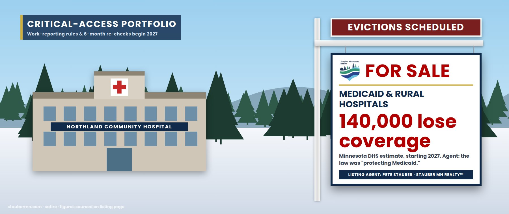

The Critical-Access Portfolio — Medicaid, and the Rural Hospitals It Keeps Open
Every clinic from Grand Marais to Mora · St. Louis County: 40,000 enrollees, about 1 in 5 residents
Protected, in the sense that a condemned building is protected by a fence
On May 22, 2025, listing agent Pete Stauber announced that the One Big Beautiful Bill would put “working Minnesotans first” by, among other things, “protecting Medicaid for the most vulnerable.” He voted for it that day and again on final passage (Roll Calls 145 & 190).
The Congressional Budget Office then appraised the protection: $911 billion less in federal Medicaid spending over ten years, and 10 million more uninsured Americans in 2034. Minnesota’s Department of Human Services estimated about 140,000 Minnesotans — roughly 12% of Medical Assistance enrollees — would lose coverage starting in 2027, when new work-reporting rules and eligibility re-checks every six months take effect. About 128,000 Minnesotans will be subject to the reporting rules.
In the 8th District, Medicaid isn’t a line item; it’s the building. St. Louis County has 40,000 enrollees — about one resident in five. A county EMT told local reporters that 80% of rural ambulance patients rely on Medicare or Medicaid. Minnesota hospitals say Medicaid already pays about 79 cents for every dollar of care, and project $354 million a year in lost Medicaid revenue plus $269 million a year in new charity care.
To offset this, the law includes a five-year “Rural Health Transformation” fund. Minnesota’s first-year award: $193 million. We present it as a cash-back rebate at closing. Please do not do the math in front of the buyer.
From “protecting Medicaid” to an eviction date
Votes from the official House Clerk record.
| Date | Event | Details | Price |
|---|---|---|---|
| May 22, 2025 | Offer accepted | House passes the One Big Beautiful Bill, 215–214. Agent Stauber votes YEA: “protecting Medicaid for the most vulnerable.”Roll Call 145 | 1-vote margin |
| July 2, 2025 | Appraisal | St. Louis County: 40,000 Medicaid enrollees (about 20% of residents); Medicaid cost shift $6.4M.Northern News Now | 1 in 5 |
| July 3, 2025 | Closed | Final passage, 218–214. Agent Stauber votes YEA. Signed July 4.Roll Call 190 | Signed |
| July 21, 2025 | Appraisal | CBO: the law leaves 10 million more people uninsured in 2034 and adds $3.4 trillion to deficits.AHA News on CBO | +10M uninsured |
| July 29, 2025 | Eviction estimate | Minnesota DHS: about 140,000 Minnesotans could lose Medicaid; $165M a year in new administrative costs.Axios Twin Cities | −140,000 |
| Dec 30, 2025 | Rebate issued | Minnesota receives $193M, year one of the Rural Health Transformation Program (it asked for about $200M a year).Minnesota Medical Association | +$193M |
| May 2026 | Tenant count | Minnesota Budget Project: 128,000 Minnesotans subject to the new work-reporting rules.MN Budget Project | 128,000 |
| Jan 1, 2027 | Evictions begin | Work-reporting requirements and six-month eligibility re-checks take effect.H.R. 1 | Effective |
Occupancy and structural condition
Items the agent would prefer you skip
Seller’s Disclosure Statement
- Does “work requirements” mean people who don’t work lose coverage?It means people who can’t prove they meet the rules on schedule lose coverage. When Arkansas tried it, about 1 in 4 enrollees subject to the rules lost coverage within seven months, many for paperwork reasons. Minnesota adds six-month re-checks on top.
- Who processes the paperwork?Counties. St. Louis County said the law’s cost shifts equal a 9.5% levy increase; its 2027 levy is up to 6.25%. See The Special Assessment.
- Why does this threaten hospitals that aren’t in Medicaid?Rural hospitals run on thin margins and serve more Medicaid patients. When covered patients become uninsured, the care doesn’t stop — it becomes charity care. Minnesota hospitals project $269 million a year more of it.
- Is the $193 million rebate enough?It is one year of a five-year program, less than Minnesota requested, and smaller than either the projected Medicaid revenue loss ($354M a year) or the projected new charity care ($269M a year) on its own.
- Where did the agent stand?He voted for the law twice and described it as protecting Medicaid. We could find no in-person town hall where enrollees could ask him about it. See Where’s Pete?
“Protecting Medicaid,” appraised
What the agent says
“This big, beautiful bill will put working Minnesotans first by providing real tax relief for families and job creators, protecting Medicaid for the most vulnerable…”Rep. Pete Stauber, May 22, 2025
What the public record shows
- Voted YEA twice on the law (Roll Calls 145 and 190)
- CBO: $911 billion less federal Medicaid spending over ten years; 10 million more uninsured by 2034
- Minnesota DHS: about 140,000 Minnesotans lose coverage starting in 2027
- Minnesota hospitals: $354M a year less Medicaid revenue, $269M a year more charity care
- Rebate: $193M for year one
Similar properties in this neighborhood


Public records cited in this listing
- House Clerk, Roll Call 145 (May 22, 2025): H.R. 1, 215-214; Stauber Yea
- House Clerk, Roll Call 190 (July 3, 2025): H.R. 1 final, 218-214; Stauber Yea
- Stauber press release, May 22, 2025
- AHA News, “CBO projects OBBBA to increase uninsured by 10 million” (July 21, 2025)
- KFF, “Allocating CBO’s Estimates of Federal Medicaid Spending Reductions Across the States” ($911B)
- Axios Twin Cities, “140K Minnesotans could lose Medicaid under new law” (July 29, 2025)
- Minnesota Budget Project, “Health coverage at risk for 128,000 Minnesotans” (May 14, 2026)
- Minnesota Hospital Association, “Medicaid in Minnesota”
- Northern News Now, “St. Louis County highlights impacts of federal budget bill” (July 2, 2025)
- Minnesota Medical Association, “Minnesota To Receive $193 Million for Rural Healthcare”
- MPR News, “Minnesota is losing hospital obstetrics units faster than most states” (Sept. 4, 2026)